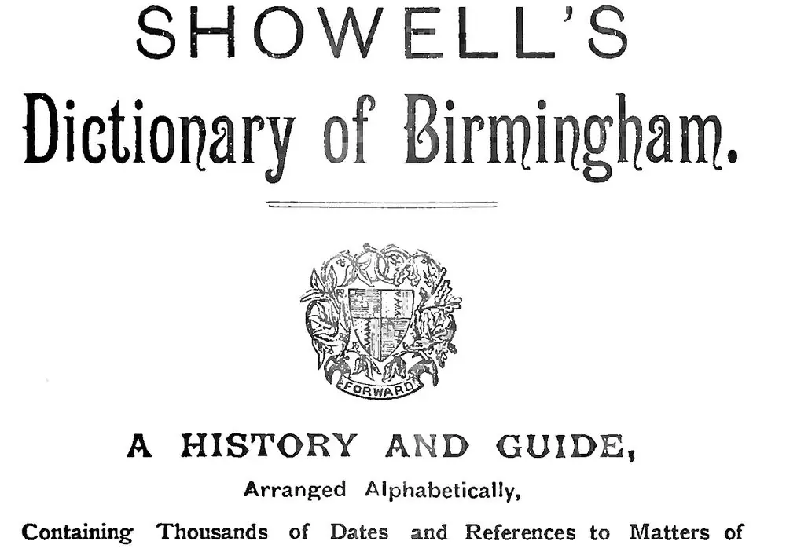

Браузер
Сайттарды ашатын бағдарлама: Chrome, Safari, Firefox.
Осы сайтта кездесетін сөздердің мағынасы. Қайсыбірін ұмытып қалсаңыз, осында қараңыз.

Сайттарды ашатын бағдарлама: Chrome, Safari, Firefox.
Әрдайым қосулы тұратын, интернетке қосылған компьютер. Сайттың бағдарламасы осында жұмыс істейді.
Браузер серверден бетті сұрайды — бұл сұрау. Сервер оны кері жібереді — бұл жауап. HTTP — олардың бір-бірімен сөйлесу ережелері.
Бетте көретін нәрсенің бәрі: мәтін, батырмалар, безендіру. Браузерде жұмыс істейді.
Сайттың көзге көрінбейтін бөлігі: сұрауды қабылдап, деректерді тауып, жауап дайындайтын сервердегі бағдарлама. Python осында жұмыс істейді.
Қай мекенжай қай бетті ашатынын анықтайтын ереже. Мысалы, /contacts мекенжайы байланыс бетін ашады.
Беттің мазмұны: тақырыптар, абзацтар, сілтемелер, суреттер.
Беттің безендірілуі: түстер, қаріптер, блоктардың орналасуы.
Браузерде жұмыс істейтін бағдарламалау тілі. Бетті жандандырады: батырмалар, мәзір, формаларды тексеру.
127.0.0.1 мекенжайы (оны localhost деп те атайды) «осы компьютер» дегенді білдіреді. Порт — бағдарлама күтіп тұрған «есіктің» нөмірі. http://127.0.0.1:5000 мекенжайы сіздің компьютеріңізде іске қосылған сайтты 5000 есігі арқылы ашады. Оны басқа адамдар көрмейді.
Сервер жауабының басындағы сан. 200 — бәрі жақсы, бет берілді. 404 — мұндай мекенжай жоқ. 405 — мекенжай бар, бірақ оған бұлай жүгінуге болмайды: мысалы, тек қарауға болатын жерге (GET) форма жіберу (POST).
Бағдарламалар арасында деректер алмасуға арналған мәтіндік формат. Python сөздігіне ұқсайды: {"title": "Нан сатып алу", "done": false}. API осылай жауап береді.
Бөгде сайт пайдаланушының атынан сіздің сайтыңызға форманы жасырын жіберетін шабуыл. Қорғаныс — әр формадағы құпия токен: Django оны {% csrf_token %} тегімен қосады.
Ережелері қарапайым бағдарламалау тілі. Онымен сайттар, деректерді талдау және автоматтандыру жазылады. Нөлден бастайтын сабақтар.
Сайт құрастыруға арналған дайын құралдар жиынтығы. Онымен бәрін өзіңіз жазудың қажеті жоқ. Фреймворктерді салыстыру.
Үлкен фреймворк. Құпиясөзбен кіруді, басқару панелін және деректермен жұмысты бірден біледі. Гитарист Джанго Рейнхардттың құрметіне аталған.
Шағын фреймворк. Тек негізін береді, қалғаны қажетіне қарай қосылады. Алғашқы сайтқа жақсы.
Компьютерге тінтуірмен емес, мәтінмен команда беретін терезе. Windows-та бұл PowerShell немесе «Пәрмен жолы», macOS пен Linux-та — «Терминал».
Python-ға арналған пакеттерді жүктеп, орнататын бағдарлама. pip install flask командасы Flask-ты орнатады.
Бір жобаның пакеттері сақталатын жеке қалта. Әр жобаның пакеттері бір-біріне кедергі келтірмейді. python -m venv .venv командасымен жасалады.
Сұрауды қабылдап, жауап қайтаратын функция. Flask-та оны маршрут өңдегіші деп, Django-да view деп атайды.
Бағдарлама деректермен толтыратын бос орындары бар HTML-бет. Мысалы, {{ title }} орнына тапсырманың атауы қойылады. Үлгілер туралы бөлім.
Деректерді іздеуге және өзгертуге оңай жазбалар қоймасы: пайдаланушылар, тауарлар, тапсырыстар. Дерекқорлар туралы бөлім.
Дерекқорға сұрау жазатын тіл. Мысалы: «әлі орындалмаған барлық тапсырмаларды көрсет».
Бір файлда сақталатын қарапайым дерекқор. Оқуға және шағын жобаларға ыңғайлы.
SQL-сұрауларды қолмен жазбай-ақ, дерекқормен Python тілінде жұмыс істеу тәсілі.
Дерекқордағы кестенің Python тіліндегі сипаттамасы: жазбаның қандай өрістері бар және олардың түрі қандай. Мысалы, тапсырманың атауы және «орындалды» белгісі бар.
Дерекқордағы кестелерді қалай өзгерту керегі жазылған нұсқау: кесте немесе өріс қосу. Django-да оны makemigrations жасайды, ал migrate қолданады.
Жазбалармен жасалатын төрт негізгі әрекет: құру, оқу, өзгерту және жою. Олар кез келген сайтта дерлік бар.
Бағдарламалардың бір-бірімен байланысу тәсілі. Мысалы, ауа райы қосымшасы серверден деректерді API арқылы алады.
Коддағы өзгерістер тарихын сақтайтын бағдарлама. Кез келген нұсқаға қайта оралуға болады. Git туралы бөлім.
Басқа адамдар аша алуы үшін сайтты интернетке шығару. Сайтты қалай жариялау керек.